The excitement of winning the Dazzling Dog Fashion Show had barely faded when Heather had another idea.
“Boys, it’s time to learn some Gujarati!” she announced one morning.
Neet tilted his head. “What now?” he barked, giving Buddy a sideways glance.
Buddy, who had just finished a deep stretch, yawned. “Sounds difficult. Can we not?”
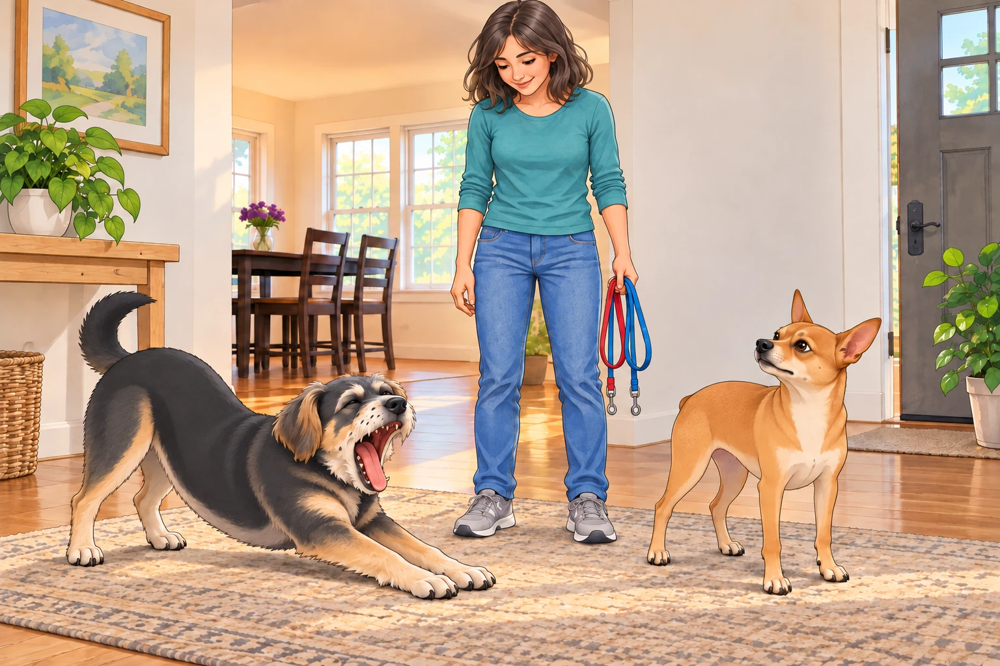
Heather put their leashes beside the door. Buddy recognized that arrangement. It meant the question had already lost.
She crouched to straighten his collar, waited for him to finish yawning, and smiled. “You might enjoy being understood.”
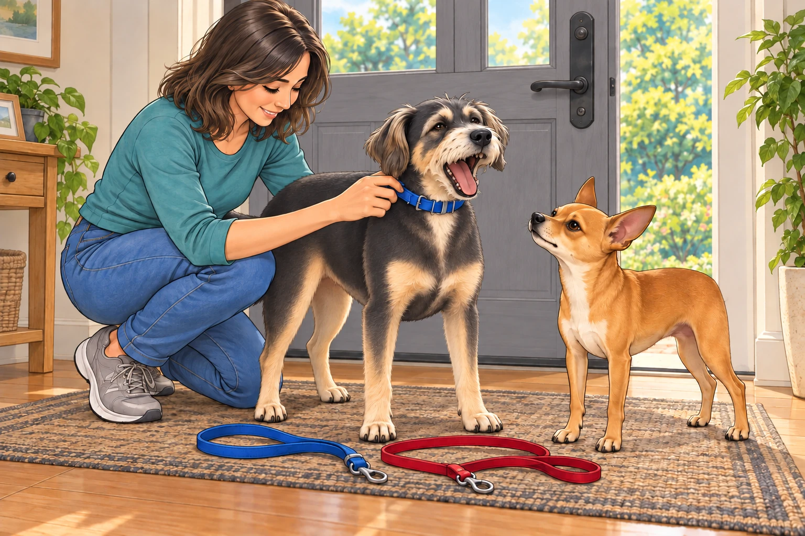
Buddy considered this. At the fashion show, people had applauded him for holding up a paw. He'd put it down only after Heather intervened. Being able to ask an ordinary question without accidentally beginning a performance sounded useful.
Neet had also considered it. “Do people who understand you give you things?”
“Sometimes,” Buddy said.
“I'm ready.”
Heather had signed them up for a special “Gujarati for Dogs” session at the park, hosted by none other than Chirag, a street-smart pariah dog who had mastered several languages, mostly in his pursuit of food.
Buddy decided to learn one greeting properly. Just one. Neet could master international catering.
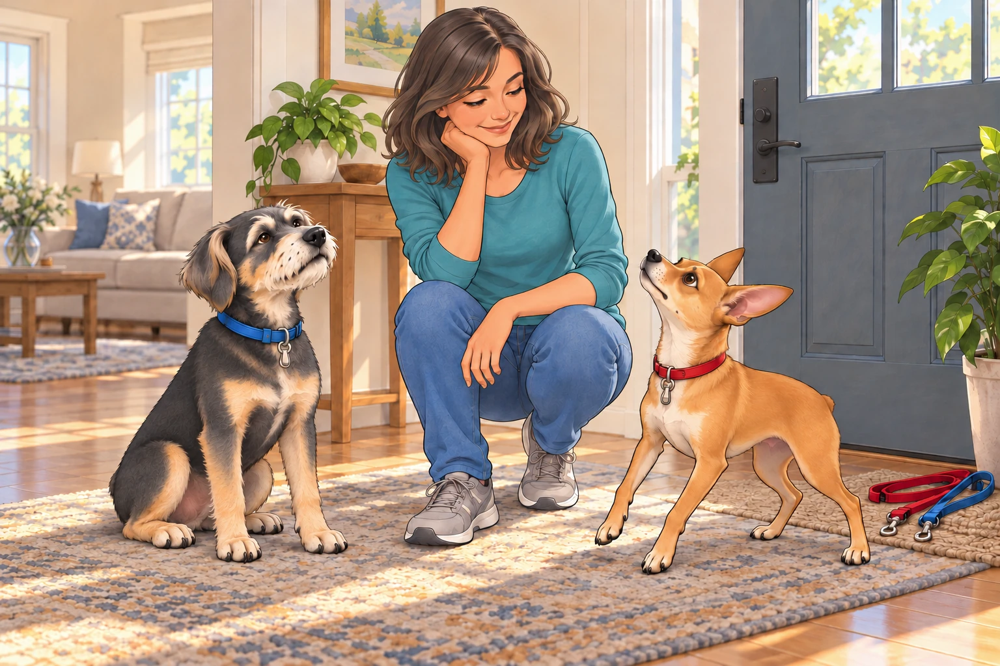
The First Lesson: Confusion Begins
When they arrived at the class, several neighborhood dogs were already gathered around Chirag, who was lazily sprawled on a bench, licking the last bits of a samosa off his paw.
Neet stopped. Here was a teacher with visible qualifications.
Buddy chose a patch of grass facing the bench. Heather sat nearby with their leash loops resting securely in her hand. She let the dogs move within their slack, then tucked her feet aside so Buddy could sit without standing on a shoe.
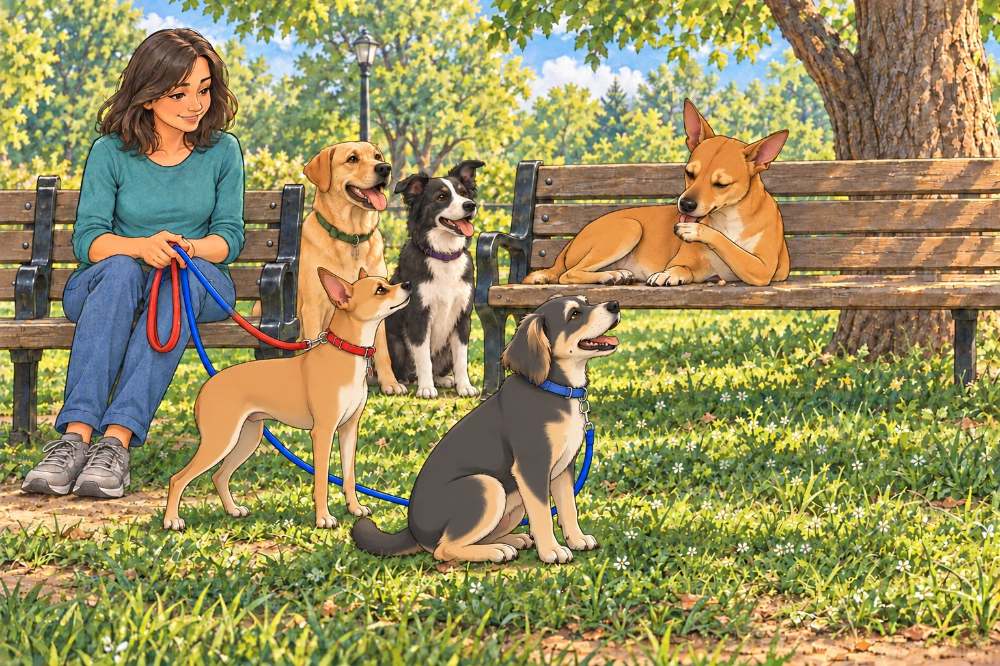
“Alright, students,” Chirag said with a dignified air. “Gujarati is a beautiful language. Let’s start with the basics. First phrase—‘Kem cho?’ It means ‘How are you?’ Now, repeat after me.”
The group obediently tried. Neet watched the paw that had held the samosa. This teacher clearly knew how to get results.
“Kem cheeese?” Neet barked.
Chirag squinted at him. “No, no. It’s ‘Kem cho.’ Try again.”
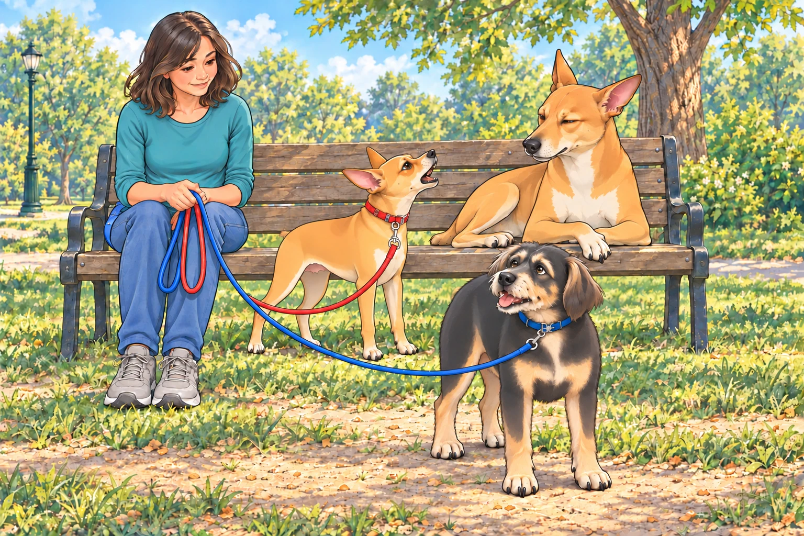
“Kimchi?” Neet tried, wagging his tail proudly.
Buddy snorted. “Neet, that’s fermented cabbage.” He tried the greeting himself, slowly. “Kem cho?” He wanted to get one phrase right before lunch entered the discussion.
Chirag nodded, but Neet had already turned to Buddy.
“Why would I ask somebody how they are if I could ask about cheese?”
“Because you might like to know.”
“I'd like to know about the cheese.”
Buddy looked toward Heather. She was listening with the patient expression she wore when Neet barked at something that had been in the room all week.
Chirag put his freshly licked paw down. “Let’s move on before my brain melts.”
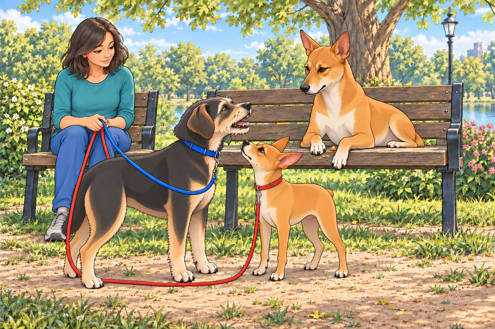
Buddy wasn't ready to move on. He had said the greeting once with the teacher's voice still in his ears. That wasn't the same as remembering it by himself.
He leaned toward Neet. “Let me practice on you.”
Neet sat taller. Being promoted from student to somebody important had taken very little time.
Buddy gave him the greeting.
Neet inspected Buddy's face, then his paws.
“What?” Buddy asked.
“I'm waiting for the food part.”
“There isn't a food part.”
“Then you're finished.”
Buddy discovered that being understood and being listened to were separate projects.
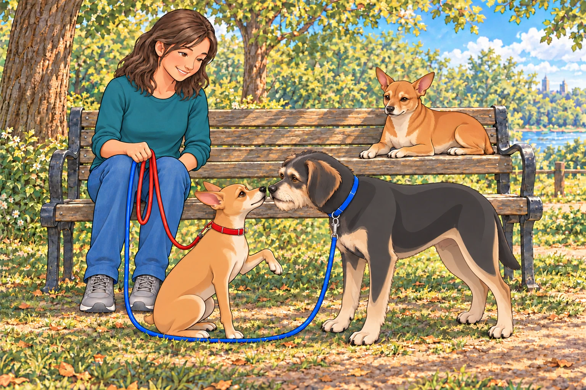
The Food-Driven Motivation
“Now, a very important phrase,” Chirag continued. “If you ever want to ask for food, say ‘Mane khorak joie chhe.’ It means ‘I want food.’ Try it.”
Neet’s ears perked up. He took one careful step nearer the bench. At last, the advanced material.
“Mango ko rock joy chair!” he yelped enthusiastically.
The other dogs burst out laughing.
“Did you just ask for a mango to sit on a chair?” Buddy asked, wiping away tears of laughter.
Neet frowned. “I don’t know, but I want food, and this language is too complicated.”
“Listen to the words,” Chirag said. “You don't need to furnish them.”
Neet looked at the bench. “You've got furniture.”
“And no mango.”
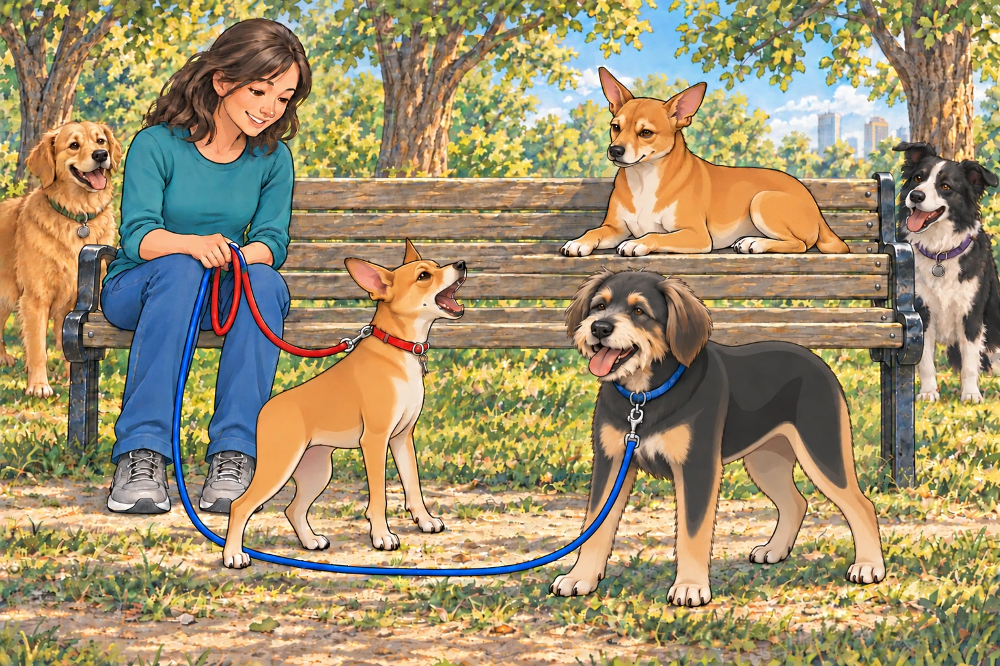
Buddy swallowed his next laugh. Neet had actually been trying that time. His ears were still aimed at Chirag, but his eyes had dropped to the grass.
“I can help you remember,” Buddy offered.
Neet brightened. “Good. You remember the words. I'll remember why we're saying them.”
That division of labor troubled Buddy, but it was too late to withdraw the offer gracefully.
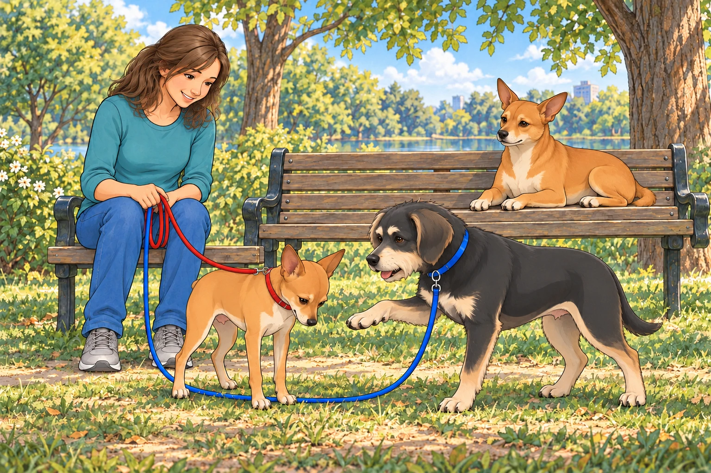
Chirag sighed. “Alright, let’s move on to something simple—‘Bahu saras!’ It means ‘Very nice!’”
Neet took a deep breath. “Babu Sharif!”
Chirag shook his head. “Who is Babu Sharif? Are you inventing people now?”
Buddy lowered his head between his paws until he could trust himself to speak. “Try it without imagining the menu.”
Neet waited while Buddy's shoulders shook.
“Are you still helping?”
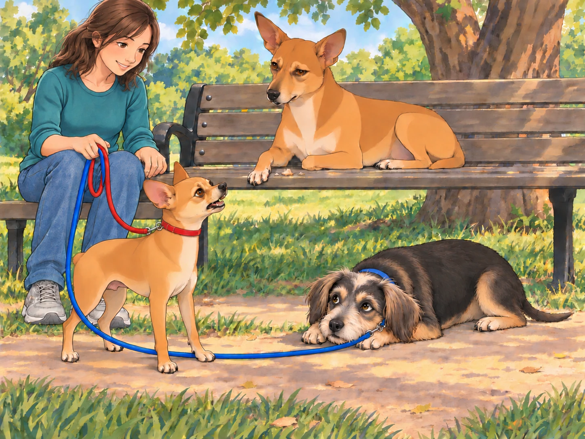
Buddy lifted his chin. “Yes.”
“Because it looks restful.”
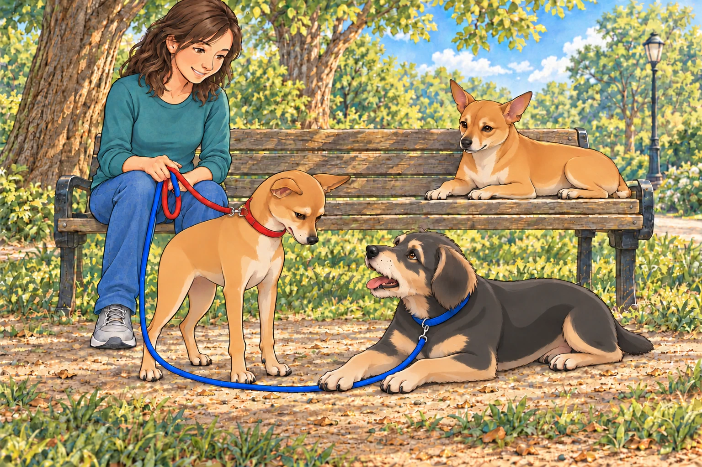
Buddy's Practice Plan
Chirag gave the class a few minutes to practice with partners. Buddy stood before Neet could nominate somebody else to do his remembering.
“We'll take turns,” Buddy said. “One speaks. The other listens. No interruptions.”
Neet opened his mouth.
“That was the rule,” Buddy said.
Neet closed it, looking mildly inconvenienced.
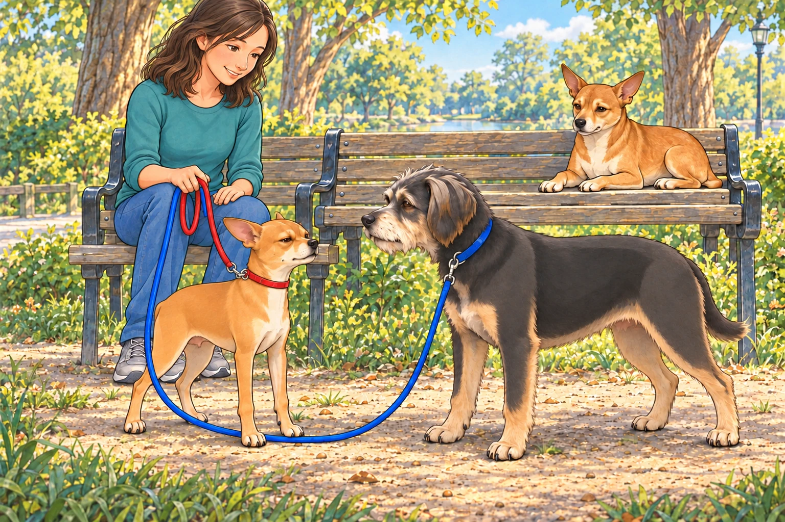
Buddy began the greeting. Neet leaned forward with impressive attention. Buddy finished, pleased with himself, and followed Neet's gaze.
A samosa crumb lay underneath the bench.
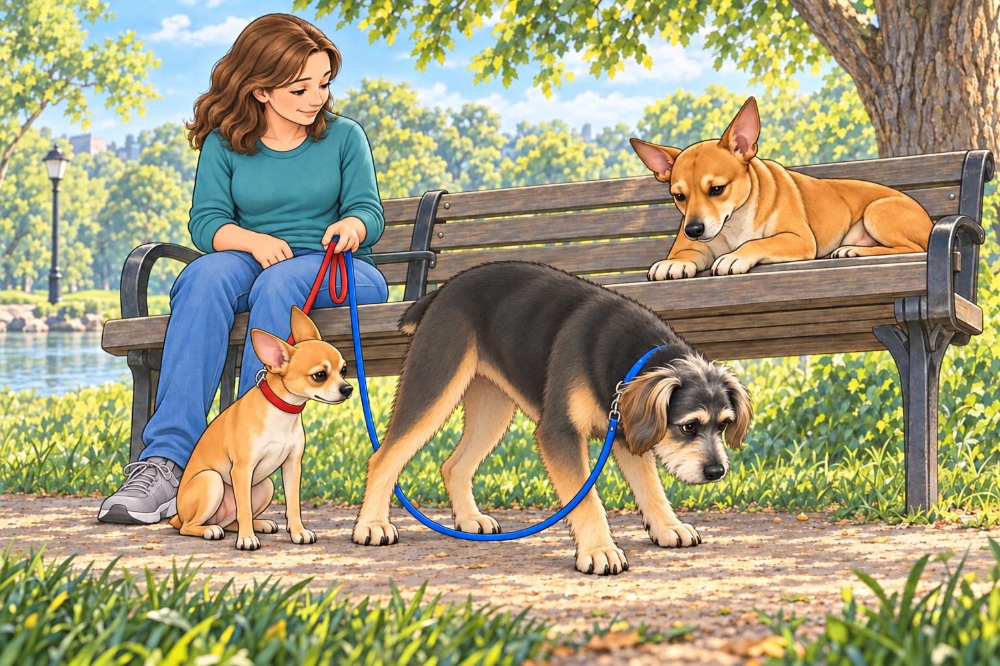
“You're looking past me.”
“Not completely. One of your legs is in the way.”
Buddy moved. Neet's head moved with him, trying to regain the crumb.
Buddy moved again. This time he stood between Neet and the bench and waited until Neet met his eyes.
“Now try listening.”
Neet did. For a few seconds, neither dog said anything.
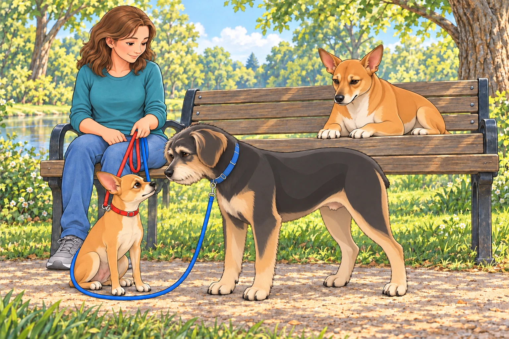
Then Buddy realized he had spent so much effort arranging his pupil that he hadn't arranged his own words.
Neet tilted his head. “Excellent. No interruptions.”
Buddy sat down abruptly.
From the bench, Chirag watched the silent lesson with interest. “How's it going?”
“We're waiting for the teacher,” Neet said.
Buddy resisted explaining the difference between a teacher and a practice partner. He still had to remember the greeting.
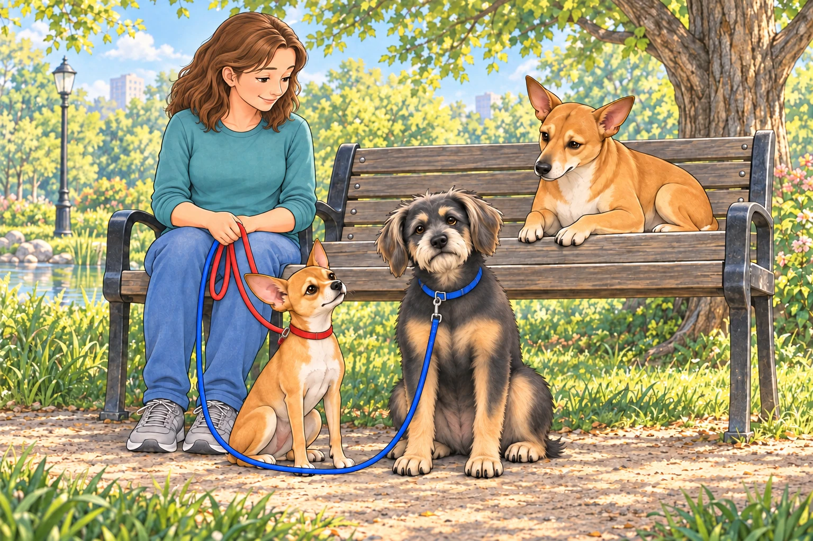
Heather reached down and rubbed his shoulder. “Take your time, darling.”
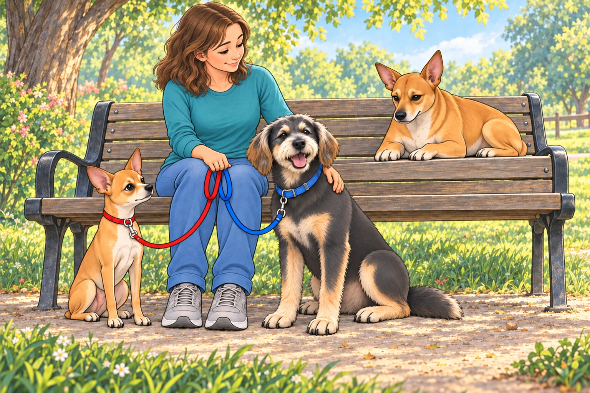
He leaned into her hand for a moment, then straightened. The class wasn't a runway. Nobody needed an immediate pose.
“Again,” Buddy said, more quietly.
This time, he said the greeting without checking Chirag first. Neet listened to the whole thing.
“That's the one,” Chirag said.
Buddy's tail stirred. Neet looked almost as pleased.
“I didn't mention cheese,” Neet pointed out.
“You didn't say anything.”
“Exactly. Difficult technique.”
Buddy was about to argue when he noticed Neet still facing him instead of the bench. He let that small success stand.
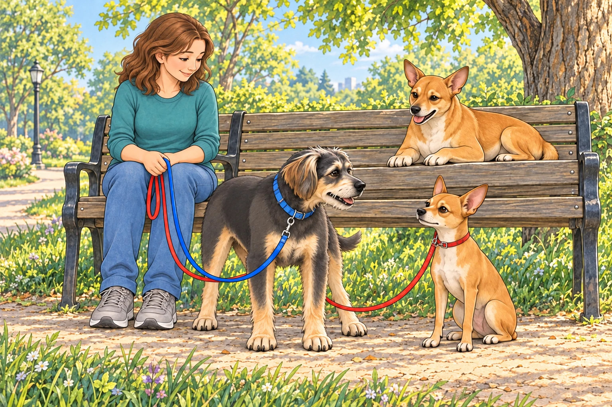
Then Chirag called everybody back for the test, and Buddy made a tactical improvement. He chose the place nearest the bench.
Neet sat beside him. “I thought the crumbs were distracting.”
“They were distracting you.”
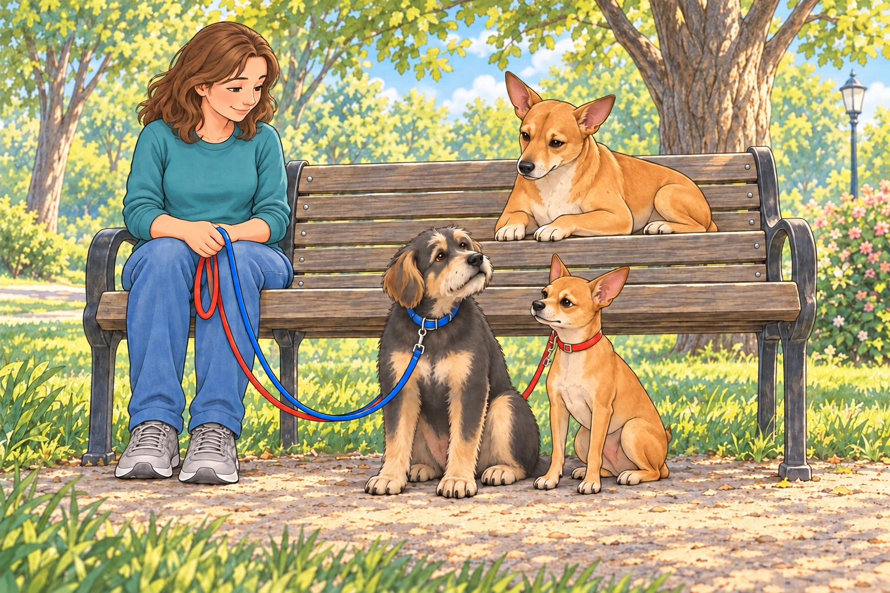
A Surprise Test
To test their knowledge, Chirag staged a mock conversation. “I will pretend to be a human. Neet, you respond in Gujarati.”
Chirag cleared his throat. “Kem cho?”
Neet wagged his tail. “Cheese toast!”
There was a little silence. A dog at the back licked his lips.
Buddy stared at Neet. “We practiced listening.”
“I listened. Then I contributed.”
Chirag sat up. “This is a conversation, not a breakfast order.”
“You did say you were pretending to be a human.” Neet looked toward Heather. “They handle breakfast.”
Heather laughed and shook her head when his eyes found her bag. Neet returned to the lesson with the disappointed air of a customer whose waiter had changed shifts.
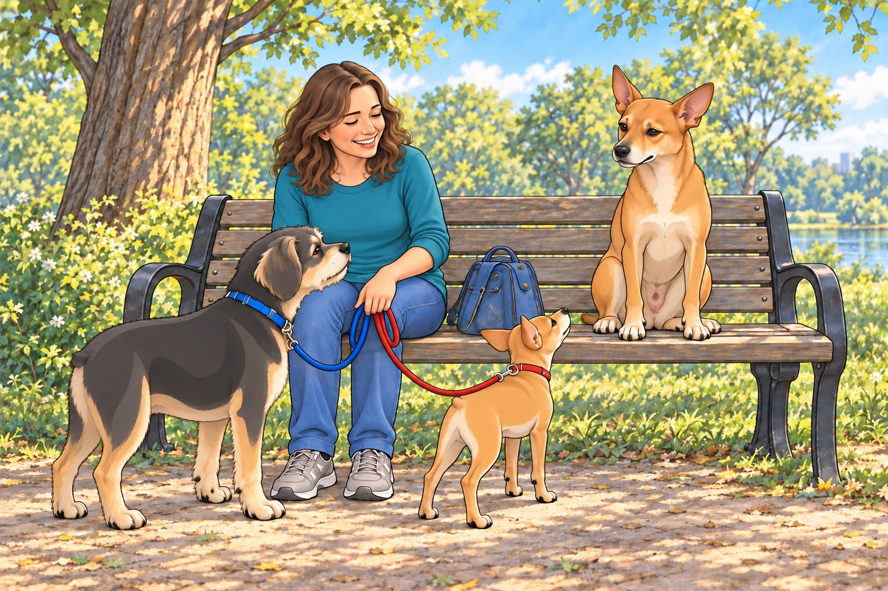
Buddy stood for his turn, planted his paws, and looked directly at Chirag. Unfortunately, the crumbs were directly below Chirag.
He could smell the samosa now. His closer seat had put the whole thing in remarkable detail. Neet had been behaving ridiculously all morning, but he hadn't invented that smell.
Chirag gave him the greeting.
“Chee—” Buddy stopped. Neet’s ears rose.
Buddy shut his eyes for a moment, then tried again. He managed the greeting, and Chirag gave a grateful nod.
Neet leaned toward him. “You were going to say it.”
“I recovered.”
“What were you going to say?”
“I recovered,” Buddy repeated, with considerably more dignity.
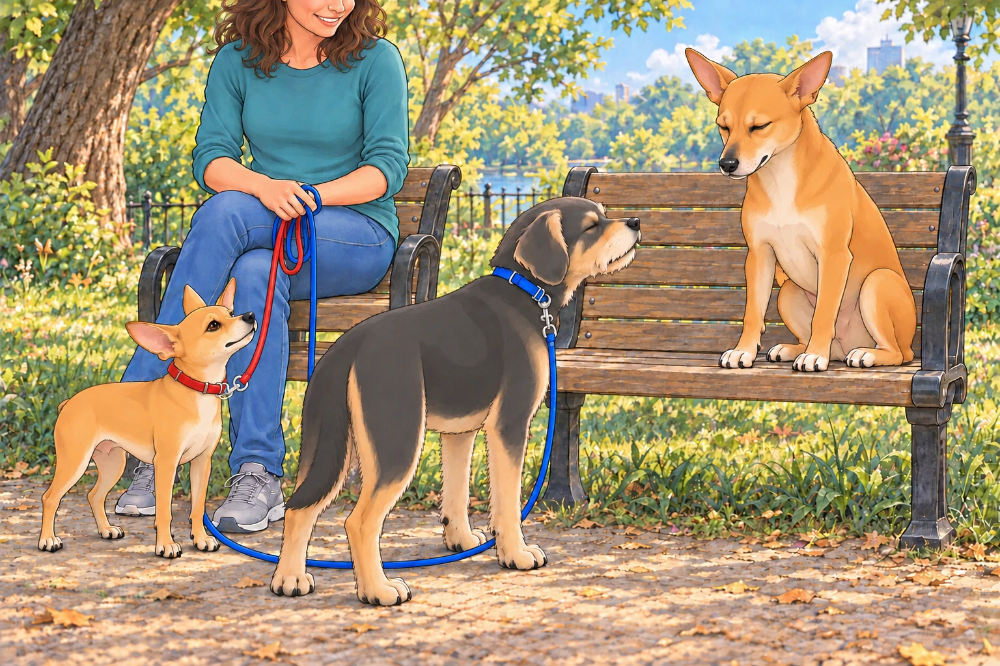
Chirag asked Buddy to turn and greet a classmate. Buddy glanced at Neet. Neet held very still, enjoying the prospect of the cheese expert being examined.
Buddy took one step away from the bench. This time he looked at the dog he was speaking to. The words came out in the right order.
The classmate's tail wagged. Buddy's did too.
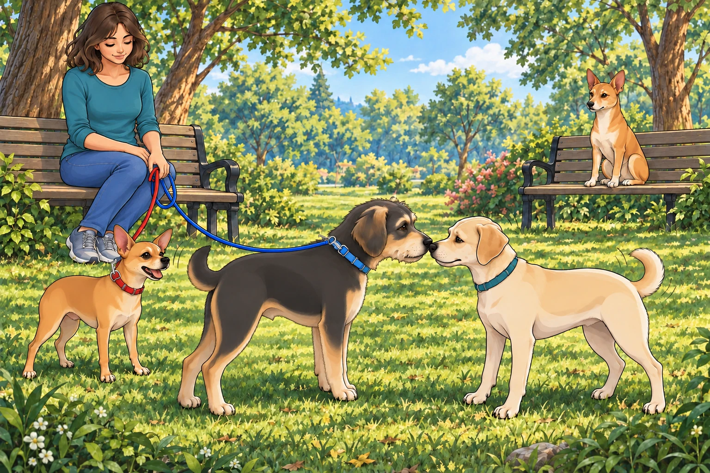
Neet waited until they were finished before whispering, “So nobody brings anything?”
“No.”
“Not even eventually?”
Buddy looked at the other dog, who had shuffled closer to make room for him in the grass.
“There's somewhere to sit.”
Neet considered the space, then sat beside them. He managed that without needing a mango.
Chirag turned back to Neet. “And you can practice the greeting again tomorrow.”
Neet nodded. Tomorrow allowed time to investigate whether toast had affected today's results.
By the end of the lesson, Buddy could manage the greeting. Neet could make the entire class hungry. Chirag stretched out on the bench again, chuckling as the other dogs tried to decide whether anybody had actually mentioned lunch.
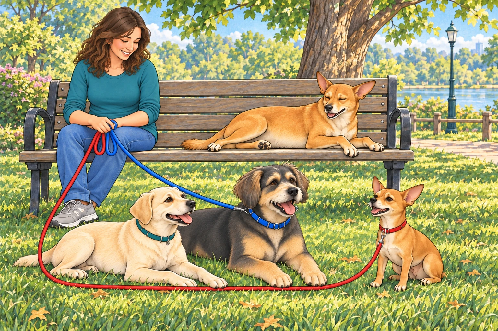
Walking Home
As they walked home, Heather looked down at them. “So, what did you learn today?”
Neet puffed out his chest. “Cheese toast!”
Buddy shook his head, laughing. “We have a lot of work to do.”
Heather sighed but couldn’t help smiling. “Well, at least you tried.” She stopped to scratch behind Buddy’s ears. He leaned into her hand; one usable greeting and a scratch seemed a respectable morning’s work.
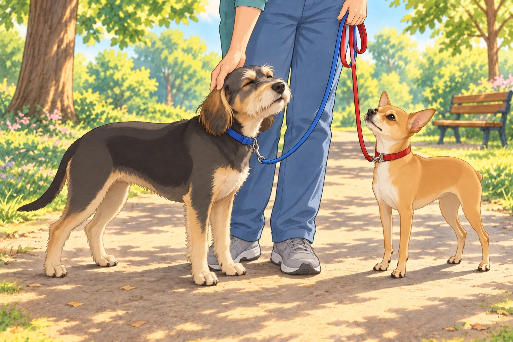
Neet pressed close to her other knee. Heather moved her hand from Buddy’s ears to Neet’s head without making him ask, and he stood beneath it, briefly silent.
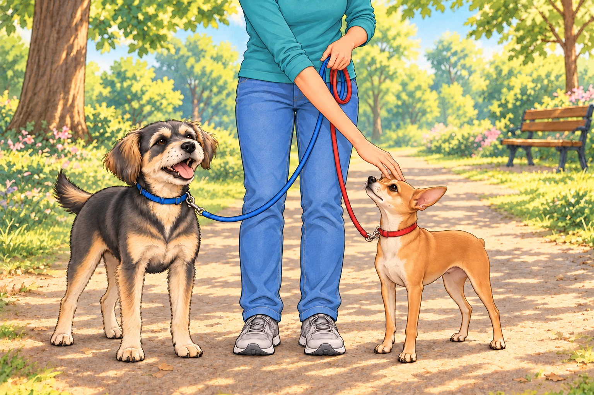
Buddy kept his cheese attempt to himself. Neet, surprisingly, did too. For the next stretch of path they walked side by side, while Heather took the turns without hurrying either of them.
Neet tried the food phrase once more on the way home. Buddy listened carefully. He had heard a mango in there again.
“Smaller mango,” Neet said before Buddy could speak. “I’m improving.”
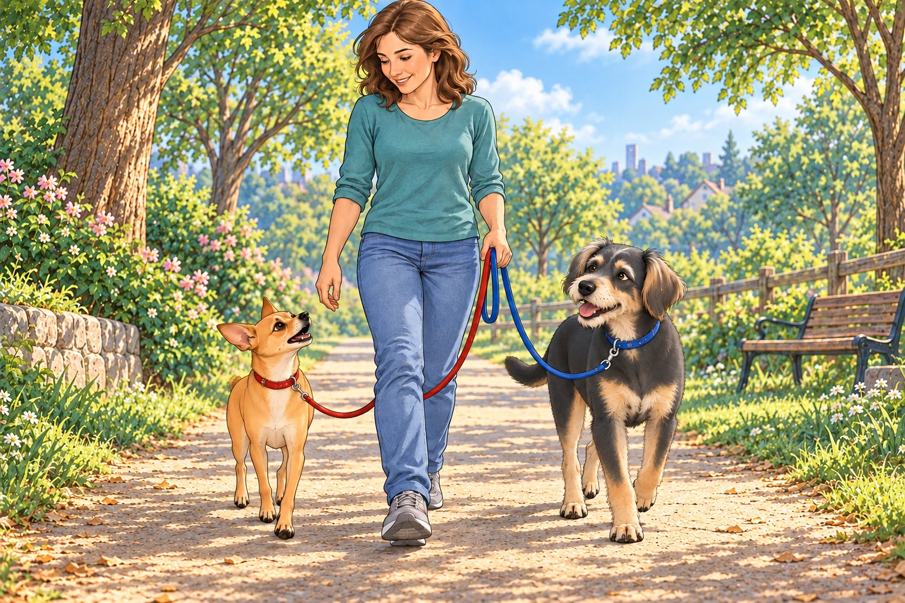